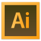
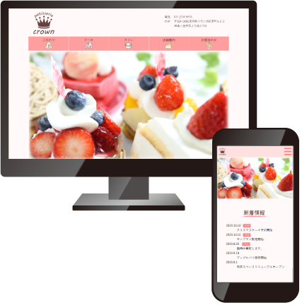
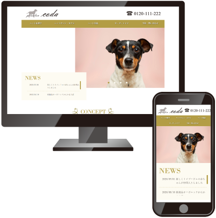
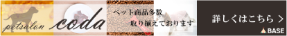

Worksの作品など学校で習った程度のものは形にできます。レスポンシブ対応のページを作ることもできます。
なるべく誰が見ても見やすいように綺麗なコードを書くように心がけています。
スライドショー、スムーススクロール、テキストをフェードインさせる、ヘッダー固定のjQueryを書くことができます。
JavaScriptはまだあまり書けないので勉強中です。

Worksの個人製作の作品とこのポートフォリオのデザインカンプを作りました。一通りは使えます。
背景を抜く、一部をぼかすといった簡単な作業はできます。

個人店のケーキ屋さんを想定して作りました。
全体的に温かみのあるページを意識して、色は薄い赤と赤みの茶色を使用しました。
親しみやすさを感じられるように手書き風のイラストや文字を使用しました。
レスポンシブ対応しています。

ペットサロンのページを作りました。
こちらは職業訓練のグループ制作で3人で作ったものです。
クライアント様から依頼を受けて指定の色を使い、高級感のあるシンプルなデザインにしました。
レスポンシブ対応しています。

こちらはグループ制作のpetsalon coda様よりご依頼があり作ったものです。
ペット用品のページにあり、BASEのショップへのバナーになっています。
画像を多く配置しイメージがわくようにしました。
色はクライアント様のwebページの指定の色と合わせて統一感が出るようにしました。